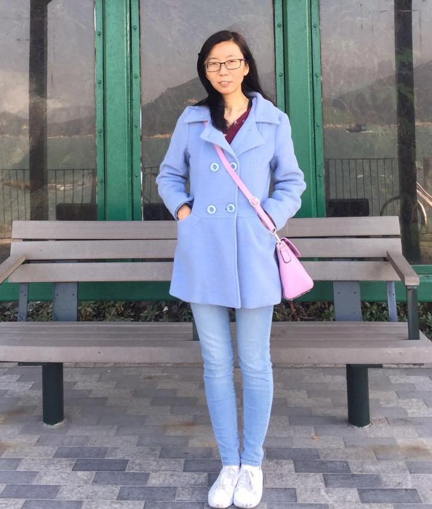

|
Xiaojuan Qi
Assistant Professor
Chow Yei Ching Building, Rm 518
Dept. of Electrical and Electronic Engineering
University of Hong Kong
Hong Kong
Email: xjqi [at] eee.hku.hk
|

|
Biography
I am currently an assistant professor at the University of Hong Kong and a member of Deep Vision Lab . My research lies in the broad areas of Computer Vision, Deep Learning, and Artificial Intelligence. We aim at endowing machines with the capability to perceive, understand, and reconstruct the visual world with the following focuses: 1) developing label-efficient and computation-efficient deep learning algorithms for natural and medical image analysis; 2) designing effective techniques for 3D scene understanding and reconstruction; and 3) building lifelong learning machines that can learn continuously, transfer previous knowledge and discover novel concepts (through interaction).
I obtained my Ph.D. degree in
Computer Science and Engineering Department,
The Chinese University of Hong Kong (CUHK), supervised by
Prof. Jiaya Jia in 2018. Before that, I got the B.Eng. degree in Electronic Science and Technology at
Shanghai Jiao Tong University (SJTU) supervised by
Prof. Ya Zhang in 2014.
Please do not hesitate to drop me an email if you are interested in joining my lab.
Experiences
Selected Publications [Google Scholar]
*: equal contribution
-
Knowledge Distillation As Efficient Pre-Training: Faster Convergence, Higher Data-Efficiency, and Better Transferability
Ruifei He, Shuyang Sun*, Jihan Yang*, Song Bai, Xiaojuan Qi.
IEEE Conference on Computer Vision and pattern Recognition (CVPR), 2022.
[Code]
-
HINT: Hierarchical Neuron Concept Explainer
Andong Wang, Wei-Ning Lee, Xiaojuan Qi.
IEEE Conference on Computer Vision and pattern Recognition (CVPR), 2022.
[Code]
-
Video Demoireing With Relation-Based Temporal Consistency
Peng Dai, Xin Yu, Lan Ma, Baoheng Zhang, Jia Li, Wenbo Li, Jiajun Shen, Xiaojuan Qi.
IEEE Conference on Computer Vision and pattern Recognition (CVPR), 2022.
[Code]
-
Stratified Transformer for 3D Point Cloud Segmentation
Xin Lai*, Jianhui Liu*, Li Jiang, Liwei Wang, Hengshuang Zhao, Shu Liu, Xiaojuan Qi, Jiaya Jia.
IEEE Conference on Computer Vision and pattern Recognition (CVPR), 2022.
[Code]
-
Towards Implicit Text-Guided 3D Shape Generation
Zhengzhe Liu, Yi Wang, Xiaojuan Qi, Chi-Wing Fu.
IEEE Conference on Computer Vision and pattern Recognition (CVPR), 2022.
[Code]
-
TWIST: Two-Way Inter-Label Self-Training for Semi-Supervised 3D Instance Segmentation
Ruihang Chu, Xiaoqing Ye, Zhengzhe Liu, Xiao Tan, Xiaojuan Qi, Chi-Wing Fu, Jiaya Jia.
IEEE Conference on Computer Vision and pattern Recognition (CVPR), 2022.
[Code]
-
Voxel Field Fusion for 3D Object Detection
Yanwei Li, Xiaojuan Qi, Yukang Chen, Liwei Wang, Zeming Li, Jian Sun, Jiaya Jia.
IEEE Conference on Computer Vision and pattern Recognition (CVPR), 2022.
[Code]
-
Voxel Field Fusion for 3D Object Detection
Yanwei Li, Xiaojuan Qi, Yukang Chen, Liwei Wang, Zeming Li, Jian Sun, Jiaya Jia.
IEEE Conference on Computer Vision and pattern Recognition (CVPR), 2022.
[Code]
-
Slot-VPS: Object-Centric Representation Learning for Video Panoptic Segmentation
Yi Zhou, Hui Zhang, Hana Lee, Shuyang Sun, Pingjun Li, Yangguang Zhu, ByungIn Yoo, Xiaojuan Qi, Jae-Joon Han.
IEEE Conference on Computer Vision and pattern Recognition (CVPR), 2022.
-
Progressive End-to-End Object Detection in Crowded Scenes
Anlin Zheng, Yuang Zhang, Xiangyu Zhang, Xiaojuan Qi, Jian Sun.
IEEE Conference on Computer Vision and pattern Recognition (CVPR), 2022.
[Code]
-
Re-distributing Biased Pseudo Labels for Semi-supervised Semantic Segmentation: A Baseline Investigation
Ruifei He*, Jihan Yang*, Xiaojuan Qi
IEEE International Conference on Computer Vision (ICCV), 2021.
Oral (3.4% acceptance rate)
[Code]
-
Aggregation with Feature Detection
Shuyang Sun, Xiaoyu Yue, Xiaojuan Qi, Wanli Ouyang, Victor Prisacariu, Philip H.S. Torr
IEEE International Conference on Computer Vision (ICCV), 2021.
-
ST3D: Self-training for Unsupervised Domain Adaptation on 3D Object Detection
Jihan Yang*, Shaoshuai Shi*, Zhe Wang, Hongsheng Li, Xiaojuan Qi.
IEEE Conference on Computer Vision and pattern Recognition (CVPR), 2021.
[Code]
-
PAConv: Position Adaptive Convolution with Dynamic Kernel Assembling on Point Clouds
Mutian Xu*, Runyu Ding*, Hengshuang Zhao, Xiaojuan Qi.
IEEE Conference on Computer Vision and pattern Recognition (CVPR), 2021.
[Code]
-
3D-to-2D Distillation for Indoor Scene Parsing
Zhengzhe Liu, Xiaojuan Qi, Chi-Wing Fu
IEEE Conference on Computer Vision and pattern Recognition (CVPR), 2021.
Oral (4.3% acceptance rate)
[Code]
-
Fully Convolutional Networks for Panoptic Segmentation
Yanwei Li, Hengshuang Zhao, Xiaojuan Qi, Liwei Wang, Zeming Li, Jian Sun, Jiaya Jia
IEEE Conference on Computer Vision and pattern Recognition (CVPR), 2021.
Oral (4.3% acceptance rate)
[Code]
-
One Thing One Click: A Self-Training Approach for Weakly Supervised 3D Semantic Segmentation
Zhengzhe Liu, Xiaojuan Qi, Chi-Wing Fu
IEEE Conference on Computer Vision and pattern Recognition (CVPR), 2021.
[Code]
-
Lightweight Generative Adversarial Networks for Text-guided Image Manipulation
Bowen Li, Xiaojuan Qi, Philip H.S. Torr, Thomas Lukasiewicz.
Conference on Neural Information Processing Systems (NeurIPS), 2020.
-
GeoNet++: Iterative Geometric Neural Network with Edge-Aware Refinement for Joint Depth and Surface Normal Estimation
Xiaojuan Qi*, Zhengzhe Liu*, Renjie Liao, Philip H. S. Torr, Raquel Urtasun, Jiaya Jia.
IEEE Transactions on Pattern Analysis and Machine Intelligence (TPAMI), 2020 (accepted).
[Code][Training data]
-
Domain-invariant Stereo Matching Networks
Feihu Zhang, Xiaojuan Qi, Ruigang Yang, Victor Adrian Prisacariu, Benjamin Wah, Philip H.S. Torr.
European Conference on Computer Vision (ECCV), 2020.
Oral (2% acceptance rate)
[Code]
-
Few-shot Action Recognition via Improved Attention with Self-supervision
Hongguang Zhang, Li Zhang, Xiaojuan Qi, Hongdong Li, Philip H.S. Torr, Piotr Koniusz.
European Conference on Computer Vision (ECCV), 2020.
Spotlight (5% acceptance rate)
-
CN: Channel Normalization For Point Cloud
Recognition
Zetong Yang*, Yanan Sun*, Shu Liu, Xiaojuan Qi, Jiaya Jia.
European Conference on Computer Vision (ECCV), 2020.
-
Memory Selection Network for
Video Propagation
Ruizheng Wu*, Huaijia Lin*, Xiaojuan Qi, Jiaya Jia.
European Conference on Computer Vision (ECCV), 2020.
-
Global Texture Enhancement for Fake Face Detection in the Wild
Zhengzhe Liu, Xiaojuan Qi, Philip H.S. Torr.
IEEE Conference on Computer Vision and Pattern Recognition (CVPR), 2020.
-
Unifying Training and Inference for Panoptic Segmentation
Qizhu Li, Xiaojuan Qi, Philip H.S. Torr.
IEEE Conference on Computer Vision and Pattern Recognition (CVPR), 2020.
-
ManiGAN: Text-Guided Image Manipulation
Bowen Li, Xiaojuan Qi, Thomas Lukasiewicz, Philip H.S. Torr.
IEEE Conference on Computer Vision and Pattern Recognition (CVPR), 2020.
[Code]
-
Controllable Text-to-Image Generation
Bowen Li, Xiaojuan Qi, Thomas Lukasiewicz, Philip H.S. Torr.
Conference on Neural Information Processing Systems (NeurIPS), 2019.
[Code]
-
AGSS-VOS: Attention Guided Single-Shot Video Object Segmentation
Huaijia Lin, Xiaojuan Qi, Jiaya Jia.
IEEE International Conference on Computer Vision (ICCV), 2019.
[Code]
-
Improved Techniques for Training Adaptive Deep Networks
Hao Li*, Hong Zhang*, Xiaojuan Qi, Ruigang Yang, Gao Huang.
IEEE International Conference on Computer Vision (ICCV), 2019.
-
3D Motion Decomposition for RGBD Future Dynamic Scene Synthesis
Xiaojuan Qi*, Zhengzhe Liu*, Qifeng Chen, Jiaya Jia.
IEEE Conference on Computer Vision and Pattern Recognition (CVPR), 2019.
-
Image Inpainting via Generative Multi-column Convolutional Neural Networks
Yi Wang, Xin Tao, Xiaojuan Qi, Xiaoyong Shen, Jiaya Jia.
Conference on Neural Information Processing Systems (NIPS), 2018.
[Code]
-
ICNet for Real-Time Semantic Segmentation on High-Resolution Images
Hengshuang Zhao, Xiaojuan Qi, Xiaoyong Shen, Jianping Shi, Jiaya Jia
European Conference on Computer Vision (ECCV), 2018.
[Code]
-
GAL: Geometric Adversarial Loss for Single-View 3D-Object Reconstruction
Li Jiang, Shaoshuai Shi, Xiaojuan Qi, Jiaya Jia.
European Conference on Computer Vision (ECCV), 2018.
Oral (2.1% acceptance rate)
-
Self-Boosted Gesture Interactive System with ST-Net
Zhengzhe Liu*, Xiaojuan Qi*, Lei Pang.
ACM Multimedia Conference (ACM MM), 2018.
Full Research Paper
-
GeoNet: Geometric Neural Network for Joint Depth and Surface Normal Estimation
Xiaojuan Qi, Renjie Liao, Zhengzhe Liu, Raquel Urtasun, Jiaya Jia
IEEE Conference on Computer Vision and Pattern Recognition(CVPR), 2018.
[Code][Training data]
-
Semi-parametric Image Synthesis
Xiaojuan Qi, Qifeng Chen, Jiaya Jia, Vladlen Koltun
IEEE Conference on Computer Vision and Pattern Recognition(CVPR), 2018.
Oral (2.1% acceptance rate)
[Code][Video][Supplement]
-
Referring Image Segmentation via Recurrent Refinement Networks
Ruiyu Li, Kaican Li, Yi-Chun Kuo, Michelle Shu, Xiaojuan Qi, Xiaoyong Shen, Jiaya Jia.
IEEE Conference on Computer Vision and Pattern Recognition(CVPR), 2018.
-
3D Graph Neural Networks for RGBD Semantic Segmentation
Xiaojuan Qi, Renjie Liao, Jiaya Jia, Sanja Fidler, Raquel Urtasun
IEEE International Conference on Computer Vision (ICCV), 2017
Oral (2.1% acceptance rate)
[Code]
-
Pyramid Scene Parsing Network
Hengshuang Zhao, Jianping Shi, Xiaojuan Qi, Xiaogang Wang, Jiaya Jia
IEEE Conference on Computer Vision and Pattern Recognition (CVPR), 2017.
Winner in ImageNet Scene Parsing Challenge 2016
[Project & Code]
-
Augmented Feedback in Semantic Segmentation under Image Level Supervision
Xiaojuan Qi, Zhengzhe Liu, Jianping Shi, Jiaya Jia.
European Conference on Computer Vision (ECCV), 2016.
-
DCAN: Deep Contour-Aware Networks for Accurate Gland Segmentation
Hao Chen, Xiaojuan Qi, Lequan Yu , Pheng-Ann Heng.
IEEE Conference on Computer Vision and Pattern Recognition (CVPR), 2016.
-
Multi-scale Patch Aggregation (MPA) for Simultaneous Detection and Segmentation
Shu Liu, Xiaojuan Qi, Jianping Shi, Jiaya Jia
IEEE Conference on Computer Vision and Pattern Recognition (CVPR), 2016
Oral (3.9% acceptance rate)
-
Deep Contextual Networks for Neuronal Structure Segmentation
Hao Chen*, Xiaojuan Qi*, Jie-Zhi Cheng, Pheng-Ann Heng.
Association for the Advancement of Artificial Intelligence (AAAI), 2016
Oral
-
Semantic Segmentation with Object Clique Potential
Xiaojuan Qi, Jianping Shi, Shu Liu, Renjie Liao, Jiaya Jia
IEEE International Conference on Computer Vision (ICCV), 2015
Honors and Awards
Full Oral presentations (acceptance rate about 2%-4%) at ECCV'18, CVPR'18, ICCV'17, CVPR'16, AAAI'16.
Outstanding Reviewer Award at ICCV 2019.
CVPR'18 Doctoral Consortium Travel Award.
Outstanding Reviewer Award at ICCV 2017.
Certificate of Merit for Best TA (Fall 2016 - 2017).
Hong Kong PhD Fellowship Award (200 candidates in Hong Kong), 2014 - 2018.
1st Place Winner at the ImageNet Scene Parsing Challenge, 2016.
1st Place Winner at MICCAI Gland Segmentation Challenge, 2015.
Excellent Graduate Award, Shanghai Jiao Tong University, 2014.
Excellent Student Scholarship, Shanghai Jiao Tong University, 2011 - 2013.
SCSK Corporation (Japan) Scholarship, 2013.
Pan Wenyuan (Tai Wan) Scholarship, 2011.
Professional Activities
- Program Committees:
Area Chair for AAAI 2022.
Area Chair for ICCV 2021.
Area Chair for CVPR 2021.
Area Chair for AAAI 2021.
Senior Program Committee Member for AAAI 2020.
- Conference Review:
European Conference on Computer Vision (ECCV) 2020.
Neural Information Systems Processing Conference (NIPS) 2020.
International Conference on Computer Vision and Pattern Recognition (CVPR) 2020.
Internation Conference on Learning Representations (ICLR) 2020.
International Conference on Computer Vision (ICCV) 2019.
British Machine Vision Conference (BMVC) 2019.
International Conference on Computer Vision and Pattern Recognition (CVPR) 2019.
International Joint Conference on Artificial Intelligence (IJCAI) 2019.
European Conference on Computer Vision (ECCV) 2018.
International Conference on Computer Vision and Pattern Recognition (CVPR) 2018.
Neural Information Systems Processing Conference (NIPS) 2018.
Asian Conference on Computer Vision (ACCV) 2018.
International Joint Conference on Artificial Intelligence (IJCAI) 2018.
International Conference on Computer Vision (ICCV) 2017.
- Journal Review:
Nature Machine Intelligence.
International Journal on Computer Vision (IJCV).
IEEE Transactions on Pattern Analysis and Machine Intelligence (PAMI).
IEEE Transaction on Image Processing (TIP).
IEEE Transaction on knowledge and Data Engineering (TKDE).
ACM Transaction on Intelligent Systems and Technology (ACM TIST).
Pattern Recognition (PR).
Medical Image Analysis (MedIA).
IEEE Transaction on Medical Imaging (TMI).
Teaching
| CSCI 4190 Introduction to Social Networks | Fall | 2016-2017 |
| ENGG 5104 Image Processing and Computer Vision (Certificate of Merit for Best TA) | Fall | 2016-2017 |
| ENGG 2601A Technology, Society and Engineering Practice | Spring | 2016-2017 |
| CSCI 3290 Computational Photography | Fall | 2015-2016 |
| ENGG 2120 Digital Logic and Systems | Fall | 2014-2015 |